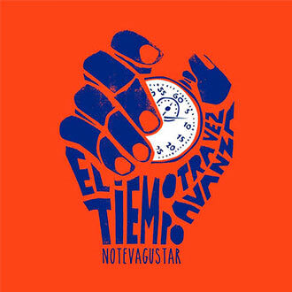
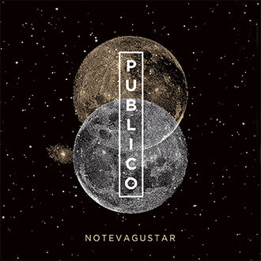

D I S C O G R A F I A

LUZ (2021)

OTRAS CANCIONES LATAM (EN VIVO) (2020)

OTRAS CANCIONES EN VIVO (2019)

SUENAN LAS ALARMAS (2017)

EL TIEMPO OTRA VEZ AVANZA (2014)

NTVG EN VIVO BUENOS AIRES (2014)

EL CALOR DEL PLENO INVIERNO (2012)

PUBLICO (LIVE) (2012)

POR LO MENOS HOY (2010)

SOLO DE DIA (2009)
INTEGRANTES
-
Emiliano Brancciari
(VOZ Y GUITARRA)
-
Martín Gil
(TROMPETA Y COROS)
-
Denis Ramos
(TROMBÓN)
-
Mauricio Ortiz
(SAXO)
-
Diego Bartaburu
(BATERÍA)
-
Guzmán Silveira
(BAJO)
-
Pablo Coniberti
(GUITARRA)
-
Francisco Nasser
(TECLADOS)